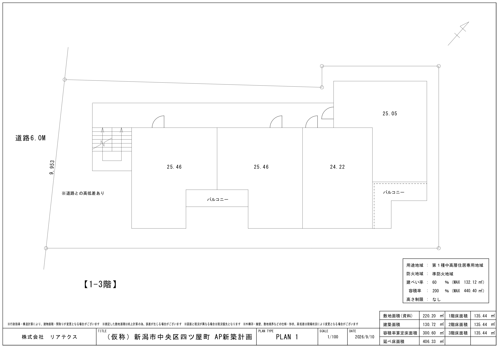

新潟県新潟市中央区四ツ屋町２丁目５１３３番６５・５１３３番１０８ ／ 新潟駅 約3,300m（バス便） ／ 現況：家屋3棟あり（解体は買主負担） ／ 媒介：株式会社千代田開発
設計士にプランを入れてもらい、3階建て・4戸/階＝12戸で確定しました。斜線制限がほとんど効かない土地という前提は変わりません（第一種中高層住居専用地域ですが都市計画情報で北側斜線は「なし」＝日影規制の対象区域では法56条1項3号が適用除外、日影規制の対象は高さ10m超なので木造3階建て9.5mは対象外）。設計士案の建築面積は130.72㎡で、建蔽率60％の上限132.12㎡に対し1.40㎡の余裕を残しています。前回の15戸案から戸数は3戸減りますが、1戸あたりの専有が1.3〜2.6㎡広がり、バルコニーが付きました。
12戸は新潟市共同住宅の建築に関する指導要綱の適用対象（10戸以上）で、第一種中高層住居専用地域は戸数の60％＝7.2台→8台が必要です。敷地内0台の計画なので、8台すべてを要綱第9条第4項によって敷地外で確保することになります。
敷地及び道路形態その他の周辺の状況から、必要台数の駐車場を敷地内に確保することが困難であり、かつ、市長が特にやむを得ないと認める場合は、第1項の規定にかかわらず、当該敷地から直線距離にして概ね200メートル以内の場所に、必要台数の駐車場を確保することにより、これに代えることができる。
周辺（住宅地図）には月極駐車場が複数あり、隣接地5133-112も「アミューズパーキング」の駐車場なので、200m以内での8台確保は現実的と見ています。ただし「敷地内に確保することが困難」と市が認めるかがポイントで、間口9.953mの本地は道路側に4台程度は物理的に置けてしまいます。着手前に建築行政課との事前協議で見込みを取ってください。認められない場合は、①敷地内に駐車を復活させる（アプローチと駐輪を圧迫）、②9戸に落として要綱の対象外にする、の二択になります。
前回案は5戸/階で1戸22.88㎡となり、地方エリアの目安23㎡を0.12㎡下回っていました。設計士PLAN1は4戸/階として24.22〜25.46㎡を確保し、全戸で23㎡をクリア。さらに廊下1.2mを取ったうえでバルコニーも設けられています（前回案はバルコニーなし・洗濯機は室内置きでした）。あわせて要綱のワンルーム形式（専用床面積25㎡未満）に該当するのは24.22㎡のC型3戸だけになり、ワンルーム関連の指導が及ぶ範囲も小さくなります。

（仮称）新潟市中央区四ツ屋町 AP新築計画 PLAN1／株式会社リアテクス／S=1/100／2026年9月10日。 1〜3階が同一プランで、開放廊下に面して4戸が並びます。図面左が前面道路（南西）、上が南東＝開放廊下側、下が北西＝主開口側です。 西端に外階段、住戸の北西側にバルコニーが付き、「※道路との高低差あり」の注記が入っています。
| タイプ | 専有面積 | 位置 | バルコニー | 要綱のワンルーム形式（25㎡未満） |
|---|---|---|---|---|
| A型（101/201/301） | 25.46㎡ | 道路側の端・外階段隣 | あり | 非該当 |
| B型（102/202/302） | 25.46㎡ | 中住戸 | あり | 非該当 |
| C型（103/203/303） | 24.22㎡ | 中住戸 | ― | 該当（3戸） |
| D型（104/204/304） | 25.05㎡ | 奥側の角・二面採光 | あり | 非該当 |
| 1階あたり 4戸／全12戸 | 100.19㎡ ／ 300.57㎡ | 各階床面積 135.44㎡・延べ床 406.33㎡ | ワンルーム形式は3戸のみ | |
前回の5戸/階（1戸22.88㎡）に対し、1戸あたり1.3〜2.6㎡広くなり、地方エリアの目安23㎡を全戸でクリアしました。 さらに新潟市共同住宅指導要綱が定めるワンルーム形式（専用床面積25㎡未満）に該当するのはC型の3戸だけになります。廊下1.2mを確保したうえでバルコニーも付いています。
設計士図面には住戸内の間仕切りが入っていないため、A・B型（25.46㎡）の内部プランを当社で作図しました。寸法・室配置は提案であり、確認申請図ではありません。
玄関を開放廊下側の中央に取り、西にUB1216と洗面・洗濯機置場、東にWCとキッチン（I型2550）、 奥に洋室7.5帖とCLを置いた1Kです。前回案（22.88㎡・洋室8.0帖）と比べて洋室はやや小さくなりますが、 水回りに幅が生まれ、洗濯機を洗面室に納められる点が大きく違います。北西側にバルコニー（奥行1.0m）。 敷地が真北から約40°振れているため真南向きは取れません。寸法はmm表記。
配置図（模式）。駐車場は設けません。道路側の約2.7mをアプローチとし、 道路面から敷地地盤までの0.7〜1.0mの高低差は敷地内階段（蹴上約17cm×5〜6段・有効幅1.2m以上・両側手すり）で処理します。 駐車場をやめたことでスロープが不要になり、その分を駐輪場とゴミ置場に充てられます。 敷地は真北から約40°振れ、道路は南西側。既存の擁壁・塀は官民界への越境を是正して造り替える前提です。
断面図。高さ9.5mは日影規制の対象ライン（10m超）の内側に収まります。 駐車場をやめて建物が道路側に寄るため、道路斜線は前回より厳しくなりますが、 反対側境界から8.7m（道路6.0m＋後退2.7m）×1.25＝10.9mで高さ9.5mを上回り成立します （法56条2項の後退緩和を見込めば11.4m×1.25＝14.3mでさらに余裕）。北側斜線は適用除外、隣地斜線は20m立上りで効きません。 設計で最高高さ10.0m以下を担保することが3階建て成立の条件です。 道路から敷地までの高低差0.7〜1.0mは敷地内階段（5〜6段）で処理します。
| ケース | 階数 | 戸/階 | 戸数 | 1戸 | 専有計 | 建築面積 | 容積 | 施工床 | 建築費 | 指導要綱の駐車場 |
|---|---|---|---|---|---|---|---|---|---|---|
| 設計士PLAN1 今回 | 3 | 4 | 12 | 24.22〜25.46㎡ | 300.57㎡ | 130.72㎡ | 136% | 122.9坪 | 7,375万 | 必要8台＝全数を敷地外 |
| 前回案 1K 22.88㎡ | 3 | 5 | 15 | 22.88㎡ | 343.23㎡ | 132.12㎡ | 156% | 119.9坪 | 7,194万 | 必要9台＝全数を敷地外 |
| 1LDK・要綱の対象外 | 3 | 3 | 9 | 38.14㎡ | 343.23㎡ | 132.12㎡ | 156% | 119.9坪 | 7,194万 | 非適用（10戸未満） |
| PLAN1を2階建てに | 2 | 4 | 8 | 24.22〜25.46㎡ | 200.38㎡ | 130.72㎡ | 91% | 81.9坪 | 4,916万 | 非適用（10戸未満） |
いずれも片廊下型（開放廊下1.2m・容積不算入）。建築費は坪60万（地方の標準単価）で統一。設計士PLAN1は容積を200％に対し136％しか使っていません（前回案は156％）が、これは建蔽率60％＝132.12㎡が天井で、そのうえ130.72㎡に抑えているためです。戸数を12戸に落としても建築費は下がらず、むしろ延べ床が10㎡増えて181万円上がります（開放廊下と外階段の面積が増えるため）。収入だけを見れば15戸案が有利ですが、1戸22.88㎡・バルコニーなしという条件が付きます。要綱の駐車場から完全に逃げられるのは9戸案だけです。
設計士PLAN1（木造3階建て 1K 24.22〜25.46㎡ × 12戸）の満室想定。新潟市中央区の実勢に新築プレミアムを乗せた水準です。駐車場は敷地内・敷地外とも収入に計上していません。
| 号室 | 階 | 間取り | 専有面積 | 想定賃料 | 共益費 | 合計 | 備考 |
|---|---|---|---|---|---|---|---|
| 301 | 3F | 1K | 25.46㎡ | 53,000 | 3,000 | 56,000 | A型・最上階・道路側端（外階段隣） |
| 302 | 3F | 1K | 25.46㎡ | 54,000 | 3,000 | 57,000 | B型・最上階・バルコニー |
| 303 | 3F | 1K | 24.22㎡ | 52,000 | 3,000 | 55,000 | C型・最上階・中住戸 |
| 304 | 3F | 1K | 25.05㎡ | 54,000 | 3,000 | 57,000 | D型・最上階・奥側角・二面採光 |
| 3F 小計 4戸 | 213,000 | 12,000 | 225,000 | ||||
| 201 | 2F | 1K | 25.46㎡ | 52,000 | 3,000 | 55,000 | A型・道路側端 |
| 202 | 2F | 1K | 25.46㎡ | 53,000 | 3,000 | 56,000 | B型・バルコニー |
| 203 | 2F | 1K | 24.22㎡ | 51,000 | 3,000 | 54,000 | C型・中住戸 |
| 204 | 2F | 1K | 25.05㎡ | 53,000 | 3,000 | 56,000 | D型・奥側角・二面採光 |
| 2F 小計 4戸 | 209,000 | 12,000 | 221,000 | ||||
| 101 | 1F | 1K | 25.46㎡ | 50,000 | 3,000 | 53,000 | A型・1F・視線と防犯で▲2,000 |
| 102 | 1F | 1K | 25.46㎡ | 51,000 | 3,000 | 54,000 | B型・1F・バルコニー |
| 103 | 1F | 1K | 24.22㎡ | 49,000 | 3,000 | 52,000 | C型・1F・中住戸 |
| 104 | 1F | 1K | 25.05㎡ | 51,000 | 3,000 | 54,000 | D型・1F・奥側角 |
| 1F 小計 4戸 | 201,000 | 12,000 | 213,000 | ||||
| 合計 12戸（駐車場なし） | 300.57㎡ | 623,000 | 36,000 | 659,000 | |||
| 想定賃料の根拠 | 水準 |
|---|---|
| 新潟市中央区の実勢相場（アットホーム・直近3ヶ月） | 1K 43,800／ワンルーム 43,600 1DK 48,900／全体平均 51,300 |
| 参考：白山駅の実勢相場 | 1K 43,700／1DK 47,400 |
| 24.2〜25.5㎡の1K（洋室7.5帖）。1Kと1DKの中間サイズ | ベース 46,000〜47,000 |
| 新築プレミアム | ＋6,000 |
| バルコニー付き（A・B・D型） | ＋1,000 |
| 砂丘上（地盤標高約15m）で最上階は眺望・海徒歩1分 | 3F＋1,000 |
| 1階住戸の視線・防犯＋敷地内階段でのアプローチ | ▲2,000 |
| 駐車場なし（新潟は自家用車保有率が高い） | ▲1,000 |
| 駅遠（新潟駅3,300m・バス便） | 上限を抑制 |
| 共益費（賃料の約6％） | 3,000 |
| 設定した想定賃料 | 3F 52,000〜54,000／2F 51,000〜53,000／1F 49,000〜51,000 |
| 戸数構成による比較 | 戸数 | 1戸 | 想定賃料/戸 | 月額合計 | 年額合計 |
|---|---|---|---|---|---|
| 設計士PLAN1 4戸/階 | 12 | 24.22〜25.46㎡ | 49,000〜54,000 | 659,000 | 7,908,000 |
| 前回案 5戸/階（1K 22.88㎡） | 15 | 22.88㎡ | 48,000〜51,000 | 790,000 | 9,480,000 |
| 3戸/階（1LDK・要綱の対象外） | 9 | 38.14㎡ | 63,000〜66,000 | 609,000 | 7,308,000 |
満室想定です。空室率（10〜20％目安）、募集費、管理費、修繕費、固都税は含みません。駐車場収入はゼロで組んでいます。前回の15戸案（1戸22.88㎡）と比べると月額は▲131,000円ですが、1戸あたりの面積が1.3〜2.6㎡広がりバルコニーが付くぶん、客付けの安定性と長期の賃料維持では12戸案が有利です。駐車場ゼロは新潟では明確なマイナス要因なので、周辺月極（隣接5133-112「アミューズパーキング」ほか）の斡旋を前提にしてください。